Beberapa kegiatan yang umum dilakukan ketika menjelang dan saat perayaan HUT RI 17 Agustus
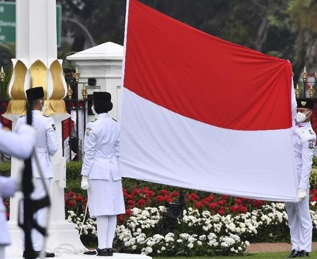
Upacara 17 Agustus adalah acara resmi yang diadakan setiap tahun di
Indonesia untuk memperingati Hari Kemerdekaan Indonesia, yang jatuh pada tanggal 17 Agustus.
Upacara 17 Agustus bukan hanya sebuah rutinitas tahunan, tetapi juga momen untuk mengingatkan
seluruh rakyat Indonesia tentang perjuangan para pahlawan.
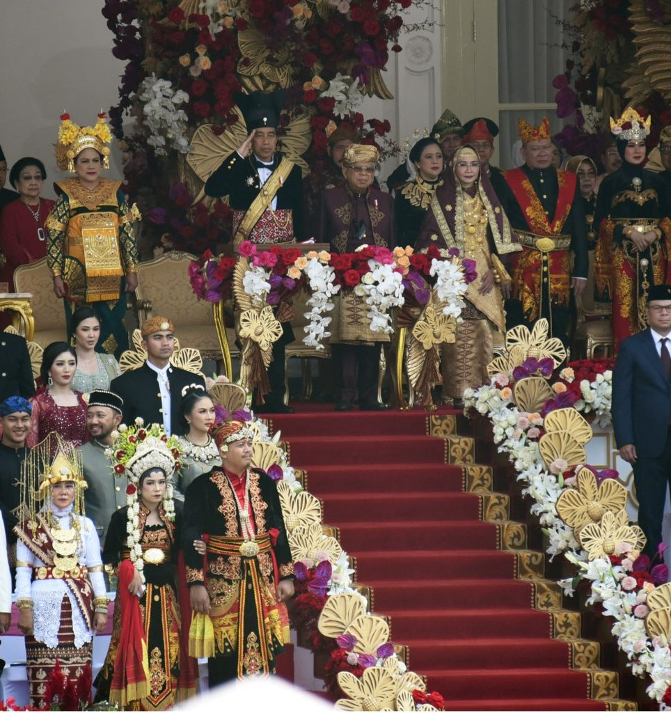
Presiden RI Joko Widodo memimpin Upacara Peringatan detik-detik
proklamasi kemerdekaan Republik Indonesia ke-78 Tahun 2023, di halaman Istana Merdeka,
Jakarta, Kamis (17/08/2023) pagi.
Pada upacara tahun ini, presiden mengenakan pakaian adat Ageman Songkok Singkepan
Ageng dari Surakarta, Jawa Tengah. Sedangkan, Ibu Iriana Jokowi mengenakan busana adat Bali.
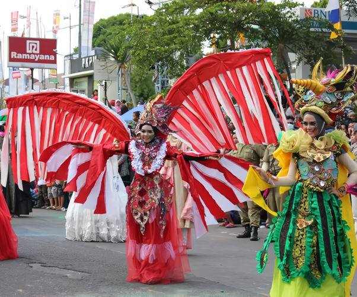
Pawai atau karnaval kemerdekaan yang diadakan untuk merayakan Hari
Kemerdekaan Indonesia adalaj wujud nyata yang mencerminkan semangat nasionalisme.
Pawai atau karnaval kemerdekaan memiliki makna yang mendalam , kebanggaan akan
identitas budaya, persatuan bangsa dan tekad untuk terus menjaga dan mengisi kemerdekaan
dengan hal-hal yang positif.
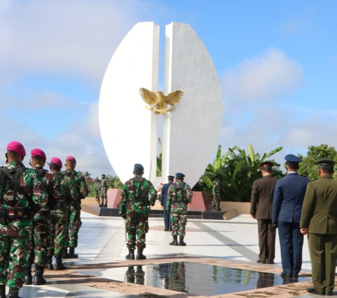
Ziarah ke Taman Makam Pahlawan merupakan bentuk penghormatan terhadap
jasa dan pengorbanan para pahlawan yang telah berjuang untuk kemerdekaan Indonesia.
Melalui ziarah ini, masyarakat mengingat dan menghargai perjuangan mereka yang telah
gugur demi tanah air.
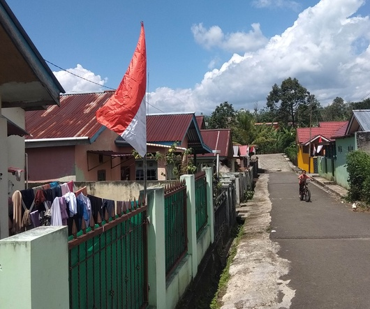
Saat menjelang perayaan Hari Ulang Tahun atau HUT Proklamasi Kemerdekaan
Republik Indonesia, masyarakat biasanya mengibarkan bendera merah putih di depan rumah masing-masing.
Kebiasaan ini dianggap sebagai tradisi untuk menyemarakkan hari kemerdekaan tiap 17 Agustus.
Pemasangan bendera Merah Putih setiap 17 Agustus adalah tradisi yang kaya akan makna, mencerminkan
rasa cinta tanah air, penghargaan terhadap sejarah dan jasa pahlawan, serta semangat persatuan
dan kebersamaan sebagai bangsa Indonesia.
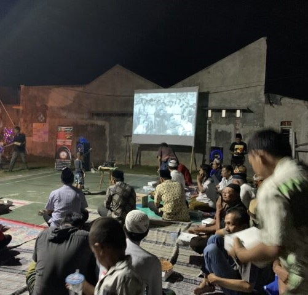
Menonton bareng film dokumenter atau film tentang kemerdekaan pada malam
17 Agustus adalah kegiatan yang kaya akan makna edukatif, historis, dan sosial, yang membantu
memperkuat rasa nasionalisme, kebersamaan, dan penghargaan terhadap sejarah dan pahlawan bangsa.
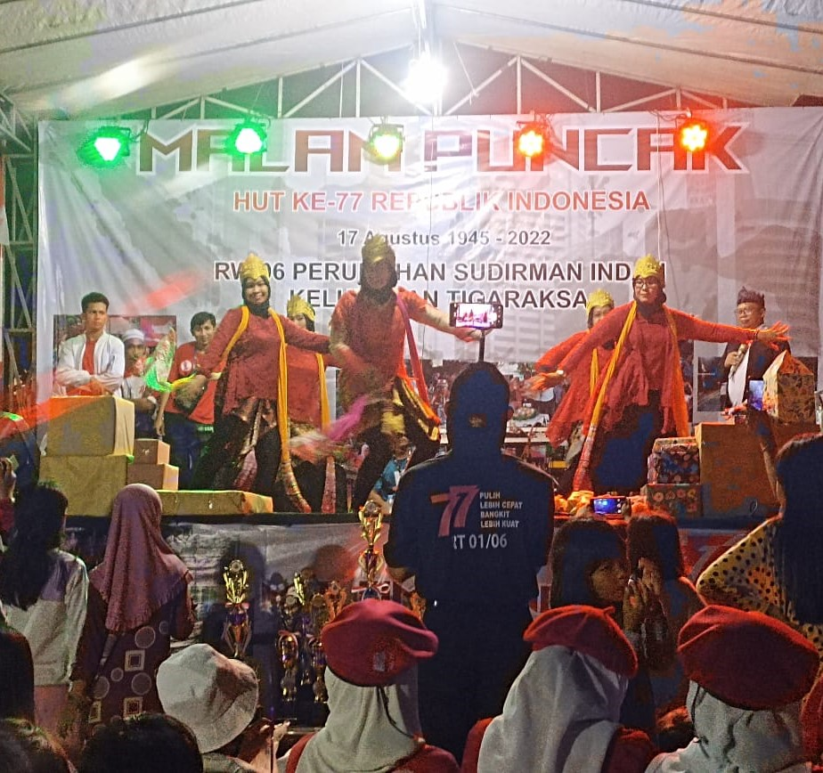
Pertunjukan seni dan musik dengan tema kemerdekaan sering diadakan untuk
meramaikan HUT RI di berbagai tempat seperti balai desa, sekolah, atau pusat kota. Ini termasuk
pagelaran wayang, tarian tradisional, dan konser musik.
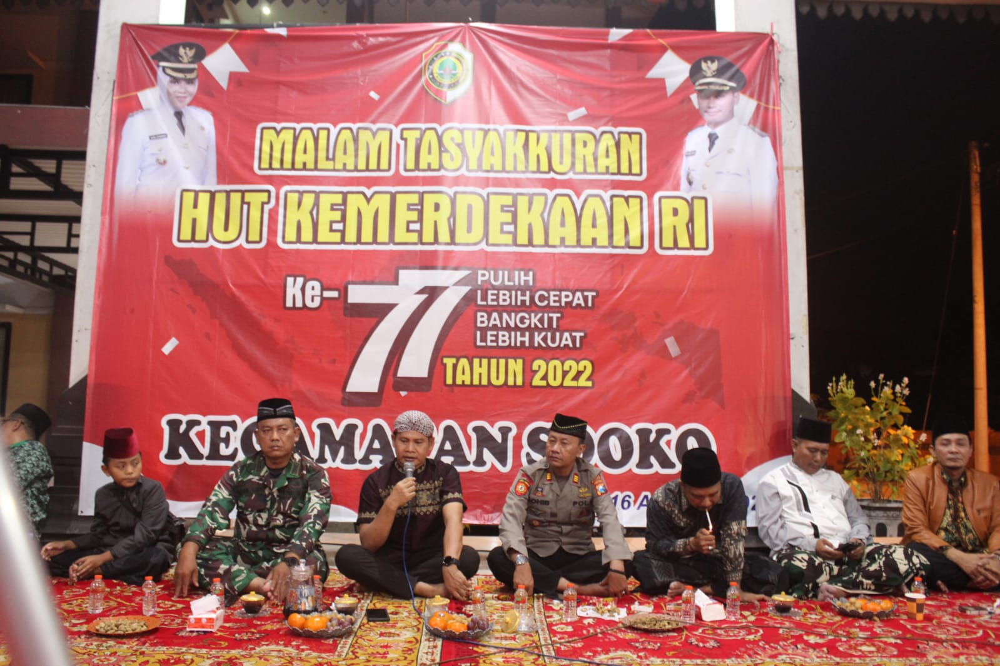
Di beberapa daerah, masyarakat mengadakan malam tasyakuran, yaitu pertemuan
untuk berdoa bersama dan mengucapkan syukur atas kemerdekaan. Biasanya, acara ini diiringi dengan
pemotongan tumpeng dan makan bersama.
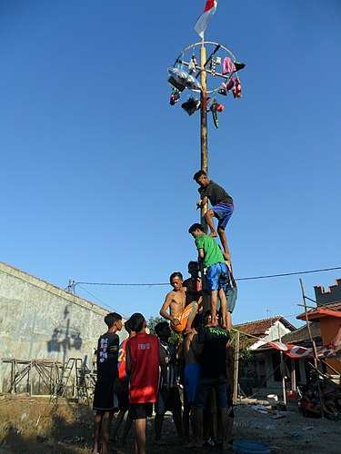
Panjat Pinang melambangkan kerja sama tim dan ketangguhan.
Dalam lomba ini, peserta harus bekerja sama untuk mencapai puncak pohon pinang
yang licin, menggambarkan bagaimana kesuksesan dapat dicapai melalui kolaborasi
dan saling membantu. Hadiah di puncak pohon melambangkan kemerdekaan dan cita-cita
yang ingin dicapai, mirip dengan perjuangan keras yang harus dilalui bangsa Indonesia
untuk meraih kemerdekaan.
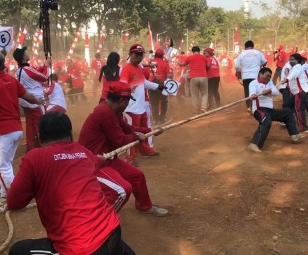
Tarik Tambang menunjukkan pentingnya kekuatan dan persatuan.
Lomba ini membutuhkan kekuatan fisik dan strategi yang baik, serta kerja sama tim
yang solid. Ini melambangkan bagaimana persatuan dan kekuatan kolektif dapat membawa
kemenangan, menggambarkan perjuangan bangsa dalam melawan penjajah dan mengatasi
rintangan untuk mencapai kemerdekaan.
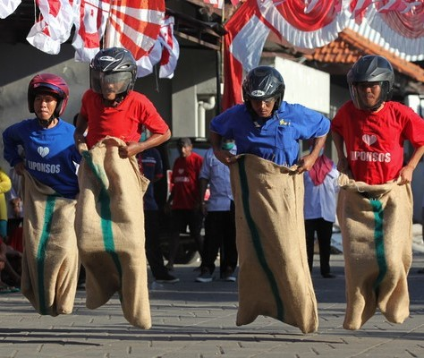
Lomba balap karung menggambarkan betapa sulitnya mendapatkan kain
sebagai pakaian yang layak saat masa penjajahan dulu. Masyarakat Indonesia menjadikan
karung goni sebagai alternatif pengganti pakaian. Hal ini karena hanya karung goni yang
mudah ditemukan dan dimiliki oleh orang Indonesia saat masa penjajahan Jepang.
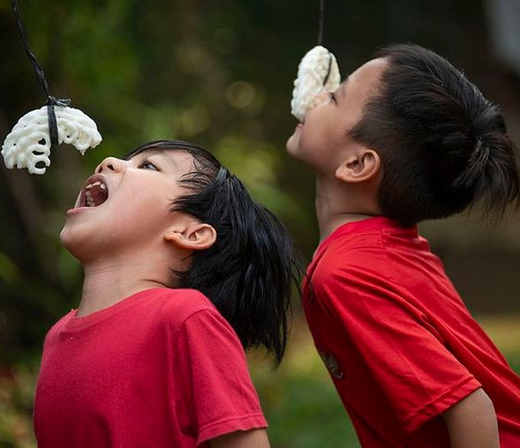
Makan Kerupuk melambangkan kesederhanaan dan kebersamaan. Kerupuk
adalah makanan sederhana yang mudah didapat, dan lomba ini menunjukkan kebersamaan
dalam menikmati hal-hal kecil.
Lomba makan kerupuk juga dimaknai sebagai perjuangan dan semangat dengan rasa
percaya diri yang tinggi. Karena setiap peserta yang mengikuti lomba makan kerupuk
secara tidak disadari akan memupuk rasa bersyukur atas rezeki yang telah diberikan
Tuhan.